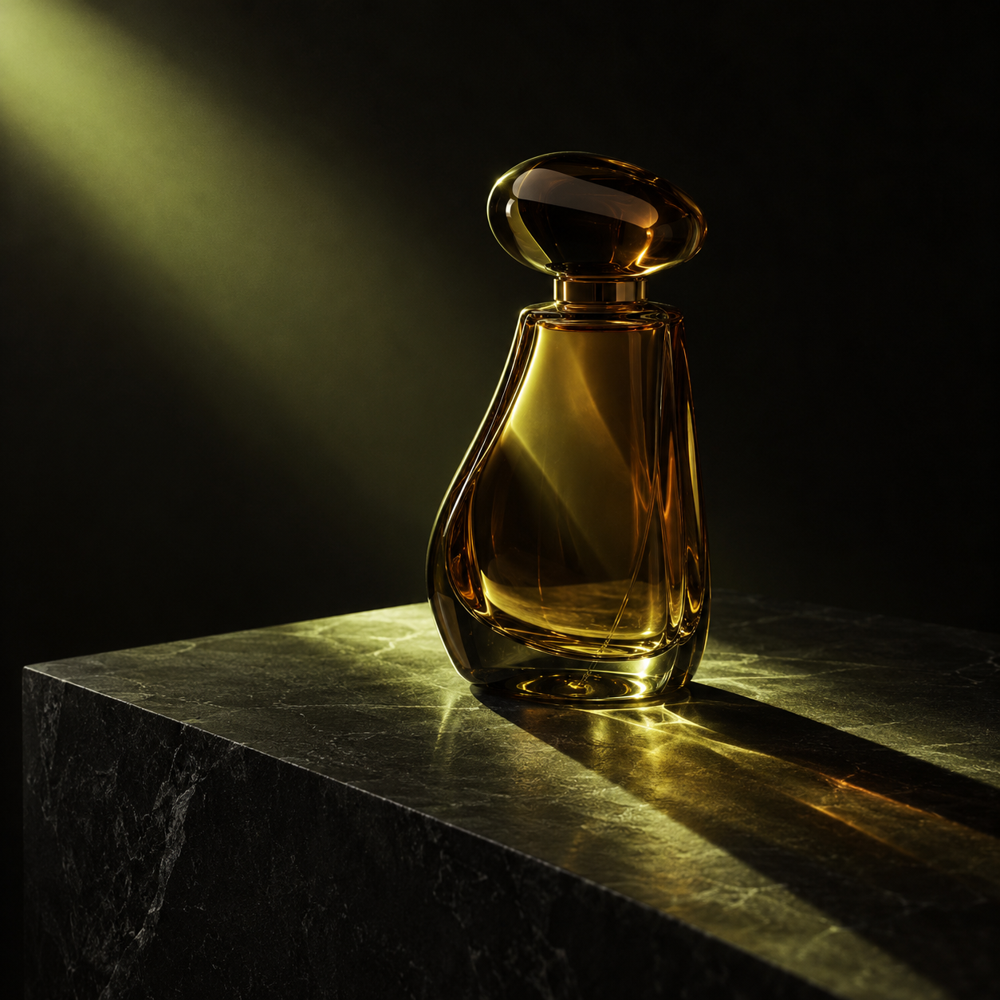
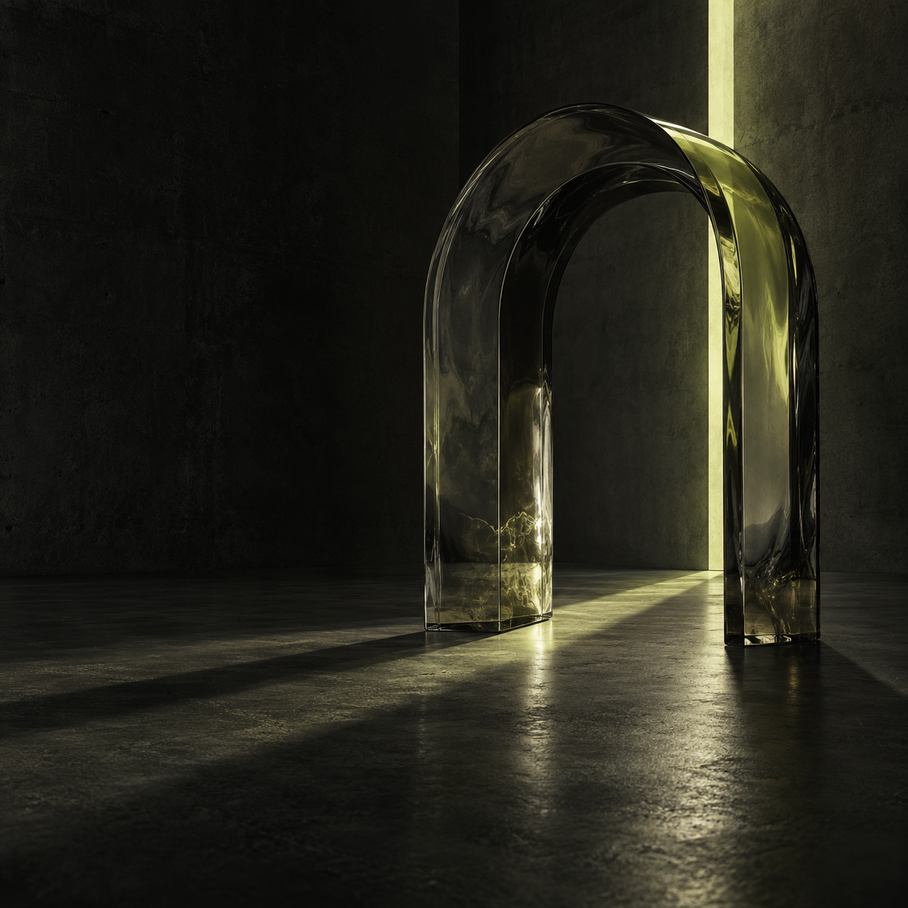

近黑与黄绿
大面积暗部留出呼吸感。黄绿色只承担光源和交互强调，避免整屏发亮。
让材质成为主角，让光线讲完故事。
一个基于 NextChat 二次开发的 AIGC 创作台概念项目。通过产品界面、图像生成与策展，把零散的生图操作组织成可展示的创作过程。
项目把图像创作拆成清晰的步骤：输入想法、选择画幅、生成或导入图像、保存提示词与来源、在画廊中回看。展示重点是视觉决策与真实流程，而不是把三张图片简单排在一起。
大面积暗部留出呼吸感。黄绿色只承担光源和交互强调，避免整屏发亮。
玻璃折射提供画面的复杂度；石材和混凝土给出稳定、可信的重量感。
每张图只保留一个视觉主角。通过尺度、位置和阴影变化，让系列统一但不重复。
用自然形态检验玻璃质感和高光细节。花瓣结构复杂，所以背景保持安静。

用单一物件建立商业摄影感。无品牌、无文字，视觉焦点落在瓶身轮廓和光的路径。

将同样的材质和光放大到空间尺度，用建筑形体收束整个系列。
先固定色彩、材质、光源与摄影感，再决定三个差异明显的主体。避免每张都换一种风格。
按主体、场景、构图、材质、光线和排除项写。明确要求无文字、无标志，减少伪造品牌元素。
用 Codex 内置图像工具生成静态图片，逐张检查形体、折射、暗部层次和系列一致性，再确定最终呈现顺序。
将成品导入创作台画廊，保留提示词与“外部导入”来源；再以本案例页解释创作选择与技术状态。
三张展示图由 Codex 内置图像工具生成，随后导入创作台。创作台已接入 Stability 和 GPT Image Mini 的页面请求流程；本地 Stability 缺少密钥，现有 OpenAI API 账户无可用额度，所以本案例不声称这三张图是在创作台内通过 API 生成。
One intricate sculptural flower made of translucent smoky glass, suspended in a near-black charcoal studio. Subtle acid-lime illumination refracts through a few petals; precise realistic caustics and soft long shadows. Strong asymmetric composition, flower slightly left of center, generous negative space, tactile glass, medium-format editorial photography, subtle film grain. No typography, no logo, no interface, no border.
A single unlabeled amber glass perfume bottle with an unusual monolithic silhouette on a honed black stone plinth. A narrow chartreuse beam passes through the bottle, creating physically plausible caustics and a long precise shadow. Asymmetric composition, restrained charcoal, amber and pale acid-lime palette, tactile materials, medium-format editorial photography. No lettering, no logos, no people, no extra props.
One monumental translucent smoked-glass arch standing alone in a near-black concrete room. A narrow acid-lime light slit crosses the arch and creates believable refracted light and precise shadow on the dark floor. Asymmetric framing, generous negative space, tactile glass and concrete, nuanced dark tones, medium-format architectural photography, subtle film grain. No people, no text, no logo, no clutter.